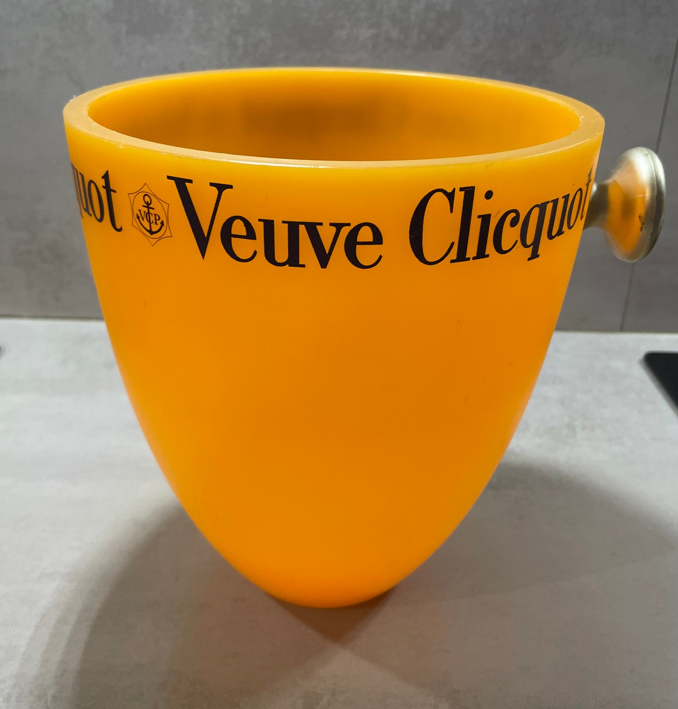

Champagne & Barware
Vintage French Champagne Buckets
A collector’s guide to vintage French Champagne buckets, exploring Veuve Clicquot, Moët & Chandon and Jean Couzon through maker’s marks, materials, construction and dating.
Read the guide